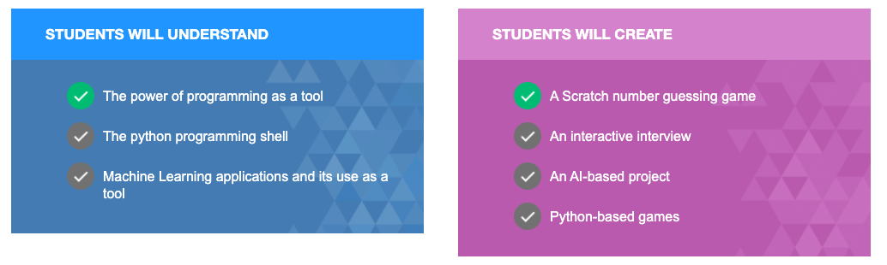
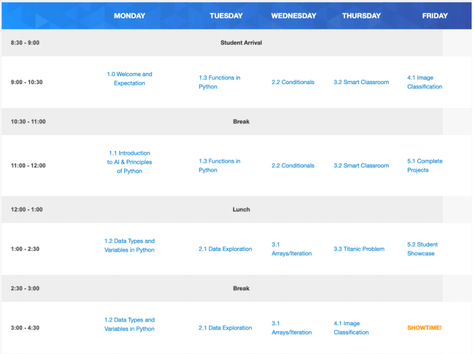

From December 2019-April 2020, I developed an Adventures in AI course with DMA . This curriculum is intended for children aged 8 to 12. Students will spend a week in the summer learning principles of AI and python. They participate in interactive activities. The objectives are:

The course focused on: